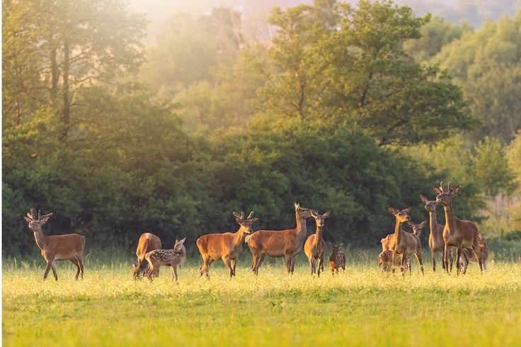
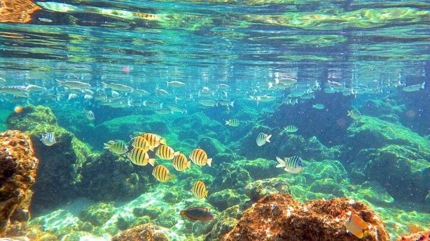

Impact
Of Climate Change

ON WILDLIFE
- Habitat Loss and Alteration: Rising temperatures are changing the geographical ranges of many species. Animals and plants adapted to specific temperature ranges are migrating toward cooler regions, such as higher altitudes or poles. Species unable to migrate or adapt may face local or global extinction. Polar species, such as polar bears and seals, are particularly vulnerable due to the loss of sea ice. Melting glaciers and ice caps reduce hunting grounds and breeding habitats for these speciesRising ocean temperatures and increasing acidity from absorbed CO₂ affect marine life, particularly coral reefs, which are sensitive to temperature changes. Coral bleaching disrupts marine biodiversity as many species depend on reefs for habitat.
- Changes in Species Behavior and Timing: Many species rely on specific seasonal cues to migrate, reproduce, or feed. Climate change is shifting these cues, disrupting migratory routes and timing. Birds, for instance, are migrating earlier or later than they historically have, potentially arriving before food sources are available.Warmer temperatures can cause early breeding seasons, which may not coincide with food availability for the young. This mismatch can lead to population declines, particularly for species that have narrow windows for successful breeding.Animals that hibernate, such as bears or hedgehogs, may face disrupted cycles. Warmer winters might shorten hibernation periods, affecting energy reserves and survival rates.
- Disrupting Food Chains: Changes in temperatures and habitat conditions can cause prey species to decline or shift locations, leaving predators without sufficient food. In some cases, predators may not be able to adapt quickly enough to the shifting distributions of prey species.Species that play critical roles in ecosystems, such as pollinators or keystone species, are particularly at risk. For example, a decline in bee populations due to changing climates can significantly disrupt pollination, which many plant species—and by extension, other wildlife—depend on.
- Increase in Extreme Weather Events: More frequent and intense weather events—such as hurricanes, droughts, and wildfires—destroy habitats and disrupt ecosystems. Flooding can eliminate nesting grounds for birds, while droughts reduce water availability for many species. Wildfires can destroy entire ecosystems, affecting wildlife directly and indirectly.
- Spreading Diseases and Species:Warming temperatures create favorable conditions for the spread of diseases that affect wildlife. For instance, amphibians worldwide are suffering from chytrid fungus outbreaks, exacerbated by changing climatic conditions. Other species may face increased vulnerability to diseases like avian malaria or Lyme disease. As ecosystems change, non-native species that can thrive in the new conditions may invade, outcompeting native species for resources. For example, warmer waters are allowing species like lionfish to spread to new regions, threatening native marine life in the Atlantic Ocean.
- Impact on Ecosystem Services:Climate change affects insects such as bees and butterflies, which are crucial pollinators. Their decline disrupts plant reproduction, impacting food supplies for a range of species. Changes in climate affect the decomposition of organic matter and nutrient cycles in ecosystems, which in turn affects the entire food web.

ON AQUALIFE
- Rising Ocean Temperatures:Higher sea temperatures cause coral reefs to expel the algae (zooxanthellae) that live inside them. Without these algae, corals lose their color and vital energy source, leading to widespread coral bleaching. Prolonged bleaching can result in coral death, endangering reef ecosystems that support numerous marine species.Fish and other marine species are migrating towards the poles or deeper waters to find cooler habitats. This disrupts ecosystems and can lead to changes in predator-prey dynamics, food availability, and biodiversity.
- Acidification: Increased CO₂ levels are causing oceans to become more acidic. This process weakens the ability of marine organisms, like mollusks (clams, oysters) and some plankton species, to form and maintain calcium carbonate shells. This threatens the food web, as many fish species depend on these organisms for food. Acidification further weakens coral skeletons, making them more susceptible to erosion and less able to support the ecosystems they host.
- Disrupting Food Chains: Changes in temperatures and habitat conditions can cause prey species to decline or shift locations, leaving predators without sufficient food. In some cases, predators may not be able to adapt quickly enough to the shifting distributions of prey species.Species that play critical roles in ecosystems, such as pollinators or keystone species, are particularly at risk. For example, a decline in bee populations due to changing climates can significantly disrupt pollination, which many plant species—and by extension, other wildlife—depend on.
- Deoxygenation: Warming waters hold less oxygen, and nutrient runoff from agriculture (exacerbated by climate change) promotes algae blooms. When these blooms die, their decomposition depletes oxygen in the water, creating hypoxic zones or "dead zones" where most marine life cannot survive.Lower oxygen levels make it harder for fish and other aquatic organisms to breathe, stressing populations and reducing biodiversity.
- Melting Ice Caps and Glaciers:Melting sea ice affects species like polar bears, seals, and penguins, which rely on ice for hunting, breeding, and shelter. In the Arctic, shrinking ice cover threatens fish species adapted to cold waters, altering the marine food web.As ice melts and seas rise, coastal habitats such as mangroves, estuaries, and wetlands are at risk of being submerged, which affects fish breeding grounds and nutrient cycles.
- Changes in Salinity:Melting glaciers and increased rainfall in certain areas cause changes in salinity, impacting species that are sensitive to salinity levels, such as certain fish and invertebrates. Estuaries, where fresh and saltwater mix, are particularly vulnerable to these changes.
ON HUMAN HEALTH
- Air Quality Degradation: Rising temperatures affect the growth and productivity of crops. Many crops, such as wheat, rice, and maize, have optimal temperature ranges for growth, and even slight increases can reduce yields. Heat stress can also affect flowering, pollination, and seed development, reducing the overall production.Changes in rainfall patterns and increased frequency of droughts affect the availability of water for irrigation and rain-fed agriculture. Drought conditions lead to lower crop yields, especially in regions that rely on seasonal rains.In some regions, warmer temperatures may lengthen the growing season, allowing farmers to plant multiple crops per year. However, in others, especially in tropical regions, extreme heat may shorten the growing season, reducing agricultural output.
- Vector-borne Diseases: Warmer temperatures and changing rainfall patterns are expanding the habitats of disease-carrying vectors like mosquitoes and ticks. This leads to the spread of diseases such as malaria, dengue fever, Zika virus, and Lyme disease into new regions, particularly where these diseases were previously uncommon.
- Food and Water Security: Climate change disrupts agricultural production by altering rainfall patterns, increasing the frequency of droughts, and causing soil degradation. This threatens food security, leading to malnutrition and related health issues.Increased flooding and water contamination can lead to outbreaks of waterborne diseases like cholera, dysentery, and other gastrointestinal infections.Prolonged droughts reduce access to clean drinking water, increasing the risk of dehydration and worsening hygiene and sanitation conditions.
- Temperature-related Deaths:Both extreme cold and heat can lead to an increase in mortality rates. While cold-related deaths may decrease in some regions, the rise in heat-related deaths is expected to outweigh these gains, particularly in tropical and subtropical regions.

ON AGRICULTURE
- Crop Yields and Production: Rising temperatures can increase ground-level ozone and exacerbate air pollution, leading to more cases of asthma, bronchitis, and other respiratory diseases.Warmer temperatures and longer growing seasons can increase pollen levels, worsening allergic conditions such as hay fever and asthma.
- Extreme Weather Events: Increased frequency of extreme weather events, including floods, hurricanes, and storms, causes direct damage to crops, soil, and infrastructure. Flooding can also lead to soil erosion and nutrient loss, further reducing agricultural productivity. Prolonged droughts severely affect crop growth, especially in arid and semi-arid regions. Without sufficient water, crops wither, leading to food shortages and economic losses for farmers.Higher temperatures during critical growth stages, such as flowering and grain filling, can reduce crop yields. Heatwaves can also increase evaporation rates, exacerbating water shortages.
- Soil Health and Fertility: Intense rainfall and flooding can lead to soil erosion, washing away topsoil that is rich in nutrients. This diminishes the soil's ability to support crop growth.Rising sea levels and increased irrigation demands can lead to saltwater intrusion into freshwater systems, causing soil salinization. Saline soils reduce crop productivity and can make land unsuitable for agriculture.Rising sea levels and increased irrigation demands can lead to saltwater intrusion into freshwater systems, causing soil salinization. Saline soils reduce crop productivity and can make land unsuitable for agriculture.
- Agricultural Pests and Diseases: Warmer temperatures and changing humidity levels create more favorable conditions for pests and diseases. This can lead to increased infestations, reducing crop yields and increasing the need for pesticide use, which can have environmental and economic costs.As climate zones shift, pests and diseases that were previously confined to certain regions are moving into new areas, threatening crops and livestock that have not evolved defenses against them.